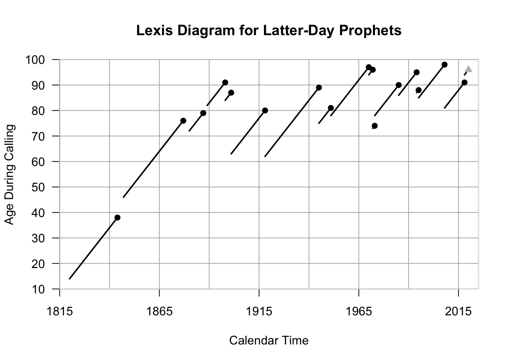

The American Statistician published an article in 2018 which investigated the question: How long do popes live? The article conducts a survival analysis to determine how long a pope will live after becoming pope. The article can be found at the following link: https://www.tandfonline.com/doi/full/10.1080/00031305.2017.1328374
As a member of the Church of Jesus Christ of Latter-day Saints, I attempted a similar analysis on the prophets that have led our church since its restoration in 1820. There have only been 17 prophets, so the dataset is much smaller, but the analysis is still similar.
props <- read.table("prophets.csv", header = TRUE, sep = ",")
library(Epi)
Lexis.diagram(age = c(10, 100), alab = "Age During Calling", date = c(1815, 2025), dlab = "Calendar Time", int = c(10,25), lab.int = c(10, 50), entry.date = props$Year.Called, entry.age = props$Age.Called, exit.age = props$Age.Died, exit.date = props$Year.Died, fail = props$Censored, pch.fail = c(16,17), col.fail = c('black', 'gray'), age.grid = TRUE, main = "Lexis Diagram for Latter-Day Prophets")
Each line on the Lexis Diagram represents one prophet, with the black circle representing his time of death. The gray triangle represents a censored observation. This is the current prophet, who has not yet died.
The article only seeks to determine how the age and year at which one becomes pope impacts one’s survival time. Similarly, I will only investigate the effect of these two variables on prophet survival.
library(survival)
x_1 <- props$Age.Called
x_2 <- props$Year.Called
s <- survreg(Surv(props$Survival, props$Censored == 0) ~ x_1 + x_2)
summary(s)##
## Call:
## survreg(formula = Surv(props$Survival, props$Censored == 0) ~
## x_1 + x_2)
## Value Std. Error z p
## (Intercept) -1.11651 8.49621 -0.13 0.895
## x_1 -0.03542 0.01735 -2.04 0.041
## x_2 0.00318 0.00488 0.65 0.515
## Log(scale) -0.49418 0.20772 -2.38 0.017
##
## Scale= 0.61
##
## Weibull distribution
## Loglik(model)= -51.6 Loglik(intercept only)= -55.1
## Chisq= 7.18 on 2 degrees of freedom, p= 0.028
## Number of Newton-Raphson Iterations: 6
## n= 17Let’s investigate how far off our model’s predictions are.
preds <- predict(s, se.fit = TRUE)
mse <- sum((preds$fit - props$Survival)^2)
rmse <- sqrt(mse)
rmse## [1] 47.1379Being off by 47 years is a lot, considering most humans only live for around 80-100. Perhaps there are other variables that should be included that would provide better estimates of survival time.
Let’s predict when the current prophet (whose observation is censored), will die.
newdat <- props[nrow(props),]
x_1_new <- newdat$Age.Called
x_2_new <- newdat$Year.Called
predsurv <- predict(s, newdata = data.frame(x_1 = x_1_new, x_2 = x_2_new), se.fit = TRUE)
predyr <- x_2_new + predsurv$fit
c(predyr, predyr - predsurv$se.fit, predyr + predsurv$se.fit)## 1 1 1
## 2025.133 2022.940 2027.327This model estimates he will die in 2025, with the uncertainty ranging from 2022 to 2027.